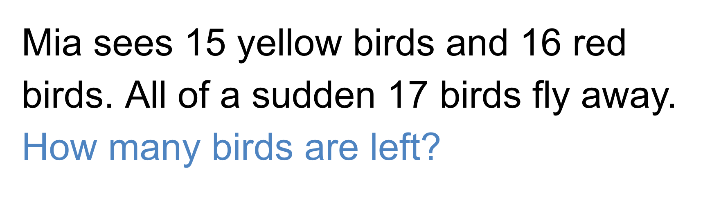
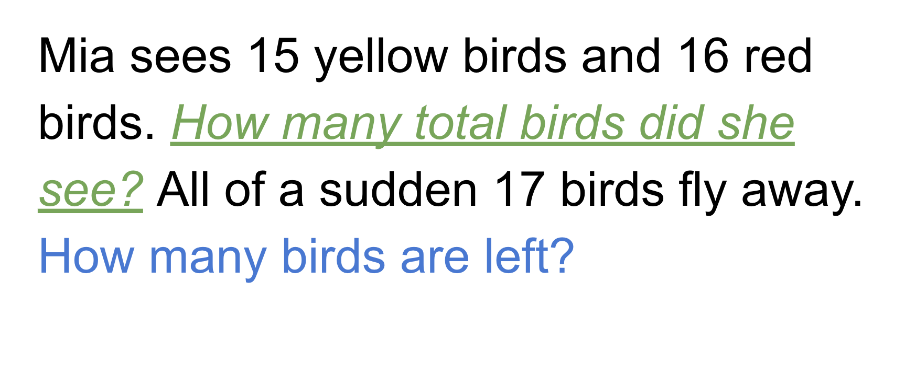
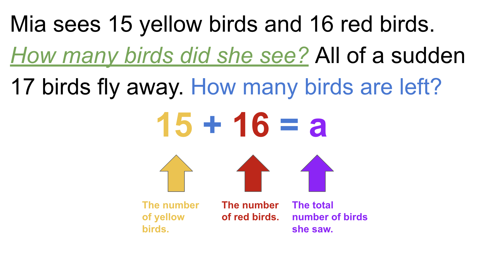
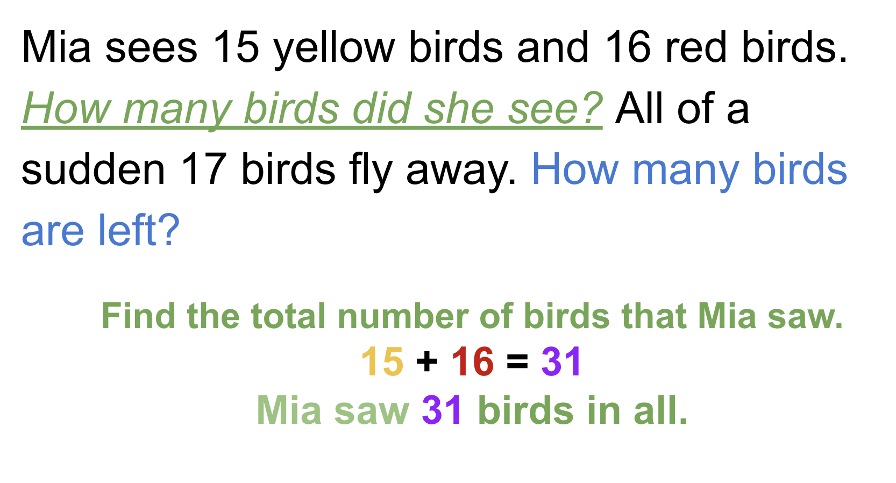
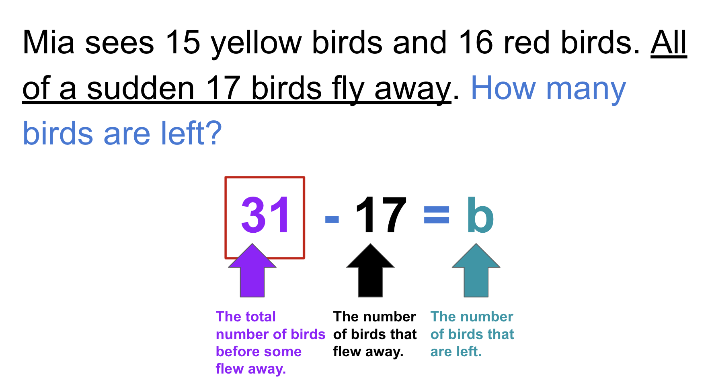
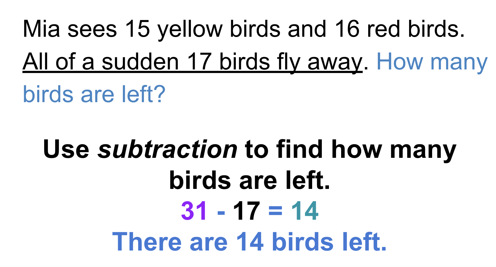
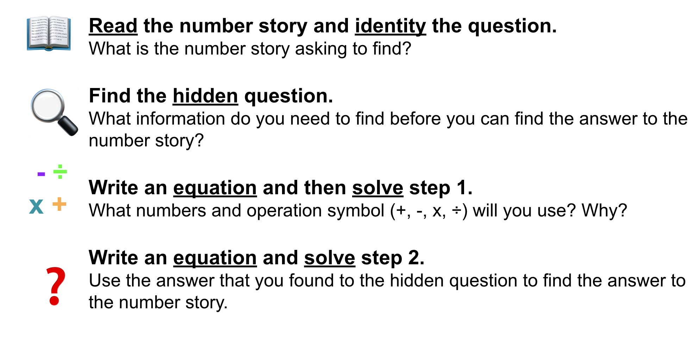

What You Should Know - Animation-ish: Animate Word Problems
 Important Vocabulary
Important Vocabulary
- Animation - a process in which drawings are changed to appear as moving images
- Flipbook - a book made by drawing a series of slowly changing images on a page and when the pages are flipped quickly the images appear to be animated
- Equation - a number sentence that includes an equal sign
What are Two-Step Word Problems?
Two-step word problems are number stories about math. The stories have a question that you will answer using math. Before you can find the solution, you must find another number first. You will use the number to find the solution! Read the two-step word problem below. What number do you need to find first?
Mia sees 15 yellow birds and 16 red birds. All of a sudden, 17 birds fly away. How many birds are left?
How Can I Solve a Two-Step Word Problem?
To solve two-step word problems you have to start by looking for the hidden question. The hidden question is important to solve the rest of the word problem. Let’s find the hidden question and answer to the two-step word problem about Mia and the birds.
Select each item to learn more.
1. Read the number story. What is the number story asking?

2. Find the hidden question.
The number story is asking for the number of birds that are left. Before the number of birds that are left can be found, what other information is needed?
In order to find the number of birds that are left, the total number of birds needs to be found.
The hidden question is: How many birds did Mia see in all? Imagine adding the hidden question to the number story. That will help you remember to find that answer first.

3. Write an equation and then solve step 1 of the two-step word problem.
An equation can help represent the problem. An equation is a number sentence with an equal sign. A variable is a letter that stands for an unknown quantity. The equation in the image below has a variable to represent the unknown quantity which is the total number of birds.

4. After the equation is written, it is time to solve step 1 of the two-step word problem.
The total number of birds that Mia saw can be found by adding the number of yellow and red birds together since addition means to combine or put together something.

5. Write an equation and solve step 2 of the two-step word problem.
Now it is time to find how many birds are left.
To find the number of birds that are left, use the answer from step 1.
In step 1, we found that Mia saw 31 birds in all. From the 31 total birds, 17 flew away. We can use subtraction because subtract involves taking apart or separating. The 17 birds that flew away are separating from the rest of the birds. Write an equation and solve.


Use the chart below to help as you solve two-step word problems.

Career Connection and Real-World Application
Animator
An animator is a person that makes animations for films, television shows, video games, or any other type of digital media. Animators use their imagination and artistic ability to plan, draw, and design a series of images using computers, other technology, and sketches on paper to create animations.

Illustrators
Illustrators are artists who draw the pictures for books, comics, and other print materials. Illustrators use creativity and artistic ability to bring words to life through pictures. Illustrators use math when planning the layout for a book or a comic. For example, they may need to solve a multi-step problem to figure out the space on the page and the number and size of images that can fit on the page.